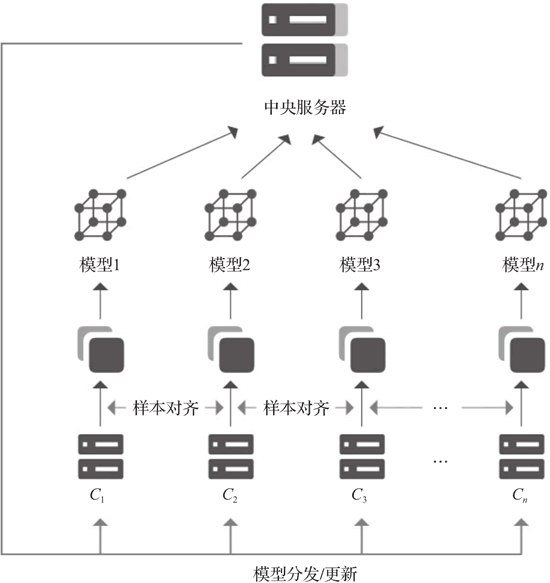
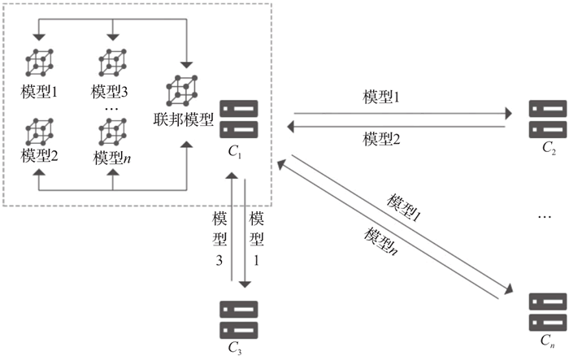

首页 > 编程笔记
联邦学习介绍（非常详细）
联邦学习是一种带有隐私保护、安全加密技术的分布式机器学习框架，旨在让分散的各参与方在满足不向其他参与者披露隐私数据的前提下，协作进行机器学习的模型训练。
经典联邦学习框架的训练过程可以简单概括为以下步骤：
联邦学习框架包含多方面的技术，比如传统机器学习的模型训练技术、协调方参数整合的算法技术、协调方与参与方高效传输的通信技术、隐私保护的加密技术等。此外，在联邦学习框架中还存在激励机制，数据持有方均可参与，收益具有普遍性。
Google 首先将联邦学习运用在 Gboard（Google 键盘）上，联合用户终端设备，利用用户的本地数据训练本地模型，再将训练过程中的模型参数聚合与分发，最终实现精准预测下一词的目标。
除了分散的本地用户，联邦学习的参与者还可以是多家面临数据孤岛困境的企业，它们拥有独立的数据库但不能相互分享。联邦学习通过在训练过程中设计加密式参数传递代替原有的远程数据传输，保证了各方数据的安全与隐私，同时满足了已出台的法律法规对数据安全的要求。
然而，现阶段人工智能技术的发展受到数据的限制。不同的机构、组织、企业拥有不同量级和异构的数据，这些数据难以整合，形成了一座座数据孤岛。当前以深度学习为核心的人工智能技术，囿于数据缺乏，无法在智慧零售、智慧金融、智慧医疗、智慧城市、智慧工业等更多生产生活领域大展拳脚。
大数据时代，公众对于数据隐私更为敏感。为了加强数据监管和隐私保护，确保个人数据作为新型资产类别的法律效力，欧盟于 2018 年推行《通用数据保护条例》（GDPR）。中国也在不断完善相关法律法规以规范数据的使用，例如，2017 年实施《中华人民共和国网络安全法》和《中华人民共和国民法总则》，2019 年推出《互联网个人信息安全保护指南》，2020 年推出《中共中央国务院关于构建更加完善的要素市场化配置体制机制的意见》《中华人民共和国个人信息保护法（草案）》等。这些法律条目都表明，数据拥有者需要接受监管，具有保护数据的义务，不得泄露数据。
目前，一方面，数据孤岛和隐私问题的出现，使传统人工智能技术发展受限，大数据处理方法遭遇瓶颈；而另一方面，各机构、企业、组织所拥有的海量数据又有极大的潜在应用价值。于是，如何在满足数据隐私、安全和监管要求的前提下，利用多方异构数据进一步学习以推动人工智能的发展与落地，成为亟待解决的问题。保护隐私和数据安全的联邦学习技术应运而生。
随着大数据时代的到来，各行各业对数据分析的需求剧增，大数据、大模型、高计算复杂度的算法对机器的性能提出了更高的要求。在这样的背景下，单机可能无法很好地完成数据庞大、计算复杂度高的大模型训练，于是分布式机器学习技术应运而生。分布式机器学习使用大规模的异构计算设备（如 GPU）和多机多卡集群进行训练，目标是协调和利用各分布式单机完成模型的快速迭代训练。
但是，之前传统的分布式机器学习技术需要先将集中管理的数据采取数据分块并行或者模型分块并行的方式进行学习，同样面临着数据管理方数据泄露的风险，这在一定程度上制约了分布式机器学习技术的实际应用和推广。
如何结合数据隐私保护与分布式机器学习，在保证数据安全的前提下合法合规地开展模型训练工作，是目前人工智能领域的研究热点问题之一。联邦学习技术在数据不出本地的前提下对多方模型进行联合训练，既保证了数据安全和隐私，又实现了分布式训练，是解决人工智能发展困境的可行途径。
接下来概述正处于成长阶段的联邦学习发展过程。
1956 年达特茅斯会议正式提出人工智能概念。短短 3 年后，Arthur Samuel 就给出了机器学习的概念。所谓机器学习，就是研究和构建一种特殊算法（而非某一个特定的算法），能够让计算机自己在数据中学习从而进行预测。
然而，由于当时的神经网络设计不当、要求进行数量庞大的计算，再加上硬件计算能力的限制，神经网络被认为是不可能实现的，机器学习的研究长期陷入停滞。
直到 20 世纪 90 年代，随着云计算、异构计算等高新技术的发展，许多传统的机器学习算法被提出，并取得了良好的效果：
分布式机器学习技术将庞大的数据和计算资源部署到多台机器上，以提高系统的可扩展性和计算效率。
实现分布式的核心问题是如何进行数据的存储和数据的并行处理，当前主要的分布式数据处理技术主要基于 Google 提出的分布式文件存储和任务分解处理的思想。Google 在 2003 年和 2004 年分别发表两篇关于 Google 分布式文件系统（GFS）和任务分解与整合（MapReduce）的论文，并公布了其中的细节。
基于这些核心思想，多家企业、科研机构开发了相应的大数据计算、大数据处理与分布式机器学习的平台。大数据计算与处理方面常见的平台有 Hadoop、Spark 和 Flink 等：
分布式机器学习训练分为数据并行和模型并行两种。数据并行是更常用的分布式训练方案，在这种方式下，所有设备自行维护一份参数，输入不同的数据，反向传播的时候通过 AllReduce 方法同步梯度，但是对于太大的模型不适用。由于数据并行会出现模型过大的情况，模型并行的方案被提出。
模型并行主要包括层内并行和层间并行两种，但它们会有参数同步和更新的问题，对此业内正在探索更加高效的自动并行方法，尝试通过梯度压缩的方式来减少参数的通信量等。
随着分布式技术的发展，一些机器学习/深度学习框架纷纷宣布支持分布式：
早在 1982 年，姚期智院士就提出了“百万富翁问题”，即两个百万富翁都想知道谁更富有，但都不愿意将自己的财富数字透露给对方，双方如何在不借助第三方的前提下获得这个问题的答案。由这个问题引申出了安全多方计算的研究领域。
具体来说，该领域探讨设计的协议是解决一组互不信任的参与方之间如何在保护隐私信息且没有可信第三方的前提下协同计算的问题。目前已有多个安全多方计算框架，涉及的密码学技术有混淆电路、秘密共享、同态加密、不经意传输等：
除了上述以加密为核心思想的技术，隐私保护技术还存在一种扰动方法，以差分隐私技术为代表。2008 年，Dwork 在论文“Differential privacy: A survey of results”中提出差分隐私的应用，目前差分隐私已经被广泛应用在隐私保护中。它的主要思路是，给需要保护的数据添加干扰噪声，使得对于相差一条记录的两个数据集的查询有高概率获得相同结果，从而避免因差异化多次查询造成的隐私泄露问题。
在这样的背景下，能够解决数据孤岛问题、保护数据安全与隐私的联邦学习技术应运而生。
2016 年，谷歌研究科学家 Brendan McMahan 等人在论文“Communication-efficient learning of deep networks from decentralized data”中提出了联邦学习的训练框架，框架采用一个中央服务器协调多个客户端设备联合进行模型训练。
2017 年 4 月，Brendan McMahan 和 Daniel Ramage 在 Google AI Blog 上发表博文“Federated learning: Colla-borative machine learning without centralized training data”，介绍了联邦学习在键盘预测方向上的应用与实现，并利用了简化版的 TensorFlow 框架。
谷歌的这些探索激发了国内外从业人员对于联邦学习技术与框架的探索热情。目前，国内外多家机构开发了基于联邦学习思想的模型训练框架和平台：
联邦学习作为人工智能的新范式，可以化解大数据发展所面临的困境。随着业界对基于联邦学习技术的工业级、商业级、企业级平台的探索不断深入，市场上形成了百花齐放的态势。与此同时，关于联邦学习架构的规范与标准不断完善，实际可商业化落地的场景逐渐增多，联邦学习生态建设已经初步完成。
不过，多家机构都在积极参与和引导联邦学习相关国内外标准的制定：
另外，各家企业与机构针对联邦学习的理论原理和可用场景纷纷发布了相关白皮书：
针对联合多方用户的联邦学习场景，一般采用的是客户端/服务器架构，企业作为服务器，起着协调全局模型的作用；而针对联合多家面临数据孤岛困境的企业进行模型训练的场景，一般可以采用对等架构，因为难以从多家企业中选出进行协调的服务器方。
在客户端/服务器架构中，各参与方须与中央服务器合作完成联合训练，如图 1 所示。
当参与方不少于两个时，启动联邦学习过程。在正式开始训练之前，中央服务器先将初始模型分发给各参与方，然后各参与方根据本地数据集分别对所得模型进行训练。接着，各参与方将本地训练得到的模型参数加密上传至中央服务器。中央服务器对所有模型梯度进行聚合，再将聚合后的全局模型参数加密传回至各参与方。
在对等计算架构中，不存在中央服务器，所有交互都是参与方之间直接进行的，如图 2 所示。
当参与方对原始模型训练后，需要将本地模型参数加密传输给其余参与联合训练的数据持有方。因此，假设本次联合训练有 n 个参与方，则每个参与方至少需要传输2（n-1）次加密模型参数。在对等架构中，由于没有第三服务器的参与，参与方之间直接交互，需要更多的加解密操作。在整个过程中，所有模型参数的交互都是加密的。目前，可以采用安全多方计算、同态加密等技术实现。全局模型参数的更新可运用联邦平均等聚合算法。当需要对参与方数据进行对齐时，可以采用样本对齐等方案。
自概念提出以来，联邦学习就一直以开源的形态展现。Google 将其工作进展与思路分享在 Google AI Blog 中，虽然博文通常以非正式或对话的方式进行更新，但是这的确是机器学习相关研究准确可靠的信息来源。Google AI Blog 有专门用于介绍机器学习、联邦学习研究的部分，为联邦学习的发展提供了许多新思路。Facebook Blog、NVIDIA Blog 上也有分享联邦学习技术的文章。
在国内，已有超百家企业和高校参与微众银行联邦学习 FATE 开源社区。开发者参与社区、使用开源技术是与社区建设互惠互利的，他们在摄取价值的同时也通过自身的经验帮助项目和技术成长。另外，由微众银行同多家国内外 AI 公司及研究机构发起、筹备的联邦学习国际标准（IEEE P3652.1）已由 IEEE 标准委员会（SASB）一致投票通过，这将推动联邦学习相关生态的进一步繁荣。
类似于 Google AI Blog，腾讯的腾讯云社区中也有关于大数据、人工智能的专栏，分享过关于腾讯联邦学习平台 Angel PowerFL 的思路与想法。该平台充分考虑易用性、高效性与可扩展性：
不少联邦学习平台与项目在开源技术交流平台 GitHub 上开源。字节跳动相关团队 2020 年年初在 GitHub 上开源了联邦学习平台 Fedlearner，其模型训练以神经网络模型训练、树模型训练为主。对于神经网络模型训练，只需在原始 TensorFlow 模型代码里加入发送算子和接收算子，就可以将其改为支持联邦训练的模型。
其他机构的技术社区则不只是针对联邦学习。例如，蚂蚁集团的技术社区针对整个金融科技领域分享领域相关新闻、前沿技术，还举办技术相关的线上直播、线下分享等多种形式的活动。百度的 AI 开发者社区也类似，划分多个板块，涉及多领域、多技术门类，例如图像识别、知识图谱、增强现实等。其中，百度开源框架 PaddlePaddle 涉及了支持联邦学习范式的模块。
经典联邦学习框架的训练过程可以简单概括为以下步骤：
- 协调方建立基本模型，并将模型的基本结构与参数告知各参与方；
- 各参与方利用本地数据进行模型训练，并将结果返回给协调方；
- 协调方汇总各参与方的模型，构建更精准的全局模型，以整体提升模型性能和效果。
联邦学习框架包含多方面的技术，比如传统机器学习的模型训练技术、协调方参数整合的算法技术、协调方与参与方高效传输的通信技术、隐私保护的加密技术等。此外，在联邦学习框架中还存在激励机制，数据持有方均可参与，收益具有普遍性。
Google 首先将联邦学习运用在 Gboard（Google 键盘）上，联合用户终端设备，利用用户的本地数据训练本地模型，再将训练过程中的模型参数聚合与分发，最终实现精准预测下一词的目标。
除了分散的本地用户，联邦学习的参与者还可以是多家面临数据孤岛困境的企业，它们拥有独立的数据库但不能相互分享。联邦学习通过在训练过程中设计加密式参数传递代替原有的远程数据传输，保证了各方数据的安全与隐私，同时满足了已出台的法律法规对数据安全的要求。
联邦学习的由来
人工智能自 1956 年在达特茅斯会议上被正式提出以来，经历了三轮发展浪潮。第三轮浪潮起源于深度学习技术，并实现了飞跃。人工智能技术不断发展，在不同前沿领域体现出强大活力。然而，现阶段人工智能技术的发展受到数据的限制。不同的机构、组织、企业拥有不同量级和异构的数据，这些数据难以整合，形成了一座座数据孤岛。当前以深度学习为核心的人工智能技术，囿于数据缺乏，无法在智慧零售、智慧金融、智慧医疗、智慧城市、智慧工业等更多生产生活领域大展拳脚。
大数据时代，公众对于数据隐私更为敏感。为了加强数据监管和隐私保护，确保个人数据作为新型资产类别的法律效力，欧盟于 2018 年推行《通用数据保护条例》（GDPR）。中国也在不断完善相关法律法规以规范数据的使用，例如，2017 年实施《中华人民共和国网络安全法》和《中华人民共和国民法总则》，2019 年推出《互联网个人信息安全保护指南》，2020 年推出《中共中央国务院关于构建更加完善的要素市场化配置体制机制的意见》《中华人民共和国个人信息保护法（草案）》等。这些法律条目都表明，数据拥有者需要接受监管，具有保护数据的义务，不得泄露数据。
目前，一方面，数据孤岛和隐私问题的出现，使传统人工智能技术发展受限，大数据处理方法遭遇瓶颈；而另一方面，各机构、企业、组织所拥有的海量数据又有极大的潜在应用价值。于是，如何在满足数据隐私、安全和监管要求的前提下，利用多方异构数据进一步学习以推动人工智能的发展与落地，成为亟待解决的问题。保护隐私和数据安全的联邦学习技术应运而生。
联邦学习的发展历程
人工智能自被正式提出以来，经历了 60 多年的演进过程，现已成为一门应用广泛的前沿交叉学科。机器学习作为人工智能最重要的分支之一，应用场景丰富，落地应用众多。随着大数据时代的到来，各行各业对数据分析的需求剧增，大数据、大模型、高计算复杂度的算法对机器的性能提出了更高的要求。在这样的背景下，单机可能无法很好地完成数据庞大、计算复杂度高的大模型训练，于是分布式机器学习技术应运而生。分布式机器学习使用大规模的异构计算设备（如 GPU）和多机多卡集群进行训练，目标是协调和利用各分布式单机完成模型的快速迭代训练。
但是，之前传统的分布式机器学习技术需要先将集中管理的数据采取数据分块并行或者模型分块并行的方式进行学习，同样面临着数据管理方数据泄露的风险，这在一定程度上制约了分布式机器学习技术的实际应用和推广。
如何结合数据隐私保护与分布式机器学习，在保证数据安全的前提下合法合规地开展模型训练工作，是目前人工智能领域的研究热点问题之一。联邦学习技术在数据不出本地的前提下对多方模型进行联合训练，既保证了数据安全和隐私，又实现了分布式训练，是解决人工智能发展困境的可行途径。
接下来概述正处于成长阶段的联邦学习发展过程。
1) 机器学习
机器学习的提出与发展可以追溯到 20 世纪 40 年代。早在 1943 年，Warren McCulloch和Walter Pitts 就在其论文“A logical calculus of the ideas immanent in nervous activity”中描述了神经网络的计算模型。该模型借鉴了生物细胞的工作原理，试图对大脑思维过程加以仿真，引起了许多学者对神经网络的研究兴趣。1956 年达特茅斯会议正式提出人工智能概念。短短 3 年后，Arthur Samuel 就给出了机器学习的概念。所谓机器学习，就是研究和构建一种特殊算法（而非某一个特定的算法），能够让计算机自己在数据中学习从而进行预测。
然而，由于当时的神经网络设计不当、要求进行数量庞大的计算，再加上硬件计算能力的限制，神经网络被认为是不可能实现的，机器学习的研究长期陷入停滞。
直到 20 世纪 90 年代，随着云计算、异构计算等高新技术的发展，许多传统的机器学习算法被提出，并取得了良好的效果：
- 1990 年，Robert Schapire 发表论文“The strength of weak learnability”，文中提出弱学习集可以生成强学习，推动了机器学习领域使用 Boosting 算法。
- 1995 年，Corinna Cortes 和 Vapnik 发表论文“Support-vector networks”，提出支持向量机的模型。
- 2001 年，Breinman 发表论文“Random forests”，提出随机森林算法。随着深层网络模型和反向传播算法的提出，神经网络也重回研究视野，进入繁荣发展阶段。
2) 分布式机器学习
至今，机器学习已经发展出了很多分支，应用范围也越来越广泛。然而，随着数据量的持续增长，模型复杂度不断提高，单机节点无法承载大量的数据信息和计算资源，主流机器学习的发展遇到瓶颈。为了解决大数据训练慢的难题，分布式机器学习被提出。分布式机器学习技术将庞大的数据和计算资源部署到多台机器上，以提高系统的可扩展性和计算效率。
实现分布式的核心问题是如何进行数据的存储和数据的并行处理，当前主要的分布式数据处理技术主要基于 Google 提出的分布式文件存储和任务分解处理的思想。Google 在 2003 年和 2004 年分别发表两篇关于 Google 分布式文件系统（GFS）和任务分解与整合（MapReduce）的论文，并公布了其中的细节。
基于这些核心思想，多家企业、科研机构开发了相应的大数据计算、大数据处理与分布式机器学习的平台。大数据计算与处理方面常见的平台有 Hadoop、Spark 和 Flink 等：
- Hadoop 分布式系统的基础架构在 2005 年由 Apache 实现，其中的 HDFS 分布式文件系统为海量数据提供了存储空间，MapReduce 为海量数据提供了计算支持，有效提高了大数据的处理速度；
- Spark 平台则由加州大学伯克利分校AMP实验室开发，以数据流应用为主，扩展了 MapReduce 的应用；
- Flink 是一种同时支持高吞吐、低延迟、高性能的分布式处理框架，近些年来被越来越多的国内公司所采用。
分布式机器学习训练分为数据并行和模型并行两种。数据并行是更常用的分布式训练方案，在这种方式下，所有设备自行维护一份参数，输入不同的数据，反向传播的时候通过 AllReduce 方法同步梯度，但是对于太大的模型不适用。由于数据并行会出现模型过大的情况，模型并行的方案被提出。
模型并行主要包括层内并行和层间并行两种，但它们会有参数同步和更新的问题，对此业内正在探索更加高效的自动并行方法，尝试通过梯度压缩的方式来减少参数的通信量等。
随着分布式技术的发展，一些机器学习/深度学习框架纷纷宣布支持分布式：
- 2013 年年底，由卡内基梅隆大学邢波教授主导的机器学习研究小组开源 Petuum 平台，旨在提高并行处理效率。主流深度学习框架 TensorFlow 和 PyTorch 分别于 2016 年和 2019 年开始支持分布式运行和分布式训练。
- 2017 年 1 月，由亚马逊选定的官方开源平台 MXNet 及其项目进入 Apache 软件基金会。MXNet 支持多种语言和快速模型训练。
- 2018 年 3 月，百度开源依托云端的分布式深度学习平台 PaddlePaddle。
- 2018 年 10 月，华为推出一站式 AI 开发平台 Model Arts，其中集成了 MoXing 分布式训练加速框架。MoXing 构建于开源的深度学习引擎 TensorFlow、MXNet、PyTorch、Keras 之上，使得这些计算引擎的分布式性能更高，易用性更好。
- 2019 年 1 月，英特尔开源其分布式深度学习平台 Nauta，该平台提供多用户的分布式计算环境，用于进行深度学习模型训练实验。
3) 隐私保护技术
如何在数据传输中保护数据的隐私安全，一直是密码学领域的一大研究热点。早在 1982 年，姚期智院士就提出了“百万富翁问题”，即两个百万富翁都想知道谁更富有，但都不愿意将自己的财富数字透露给对方，双方如何在不借助第三方的前提下获得这个问题的答案。由这个问题引申出了安全多方计算的研究领域。
具体来说，该领域探讨设计的协议是解决一组互不信任的参与方之间如何在保护隐私信息且没有可信第三方的前提下协同计算的问题。目前已有多个安全多方计算框架，涉及的密码学技术有混淆电路、秘密共享、同态加密、不经意传输等：
- 混淆电路针对双方安全计算，其思想是，将共同计算的函数转化为逻辑电路，对电路的每一个门都进行加密并打乱，从而保证计算过程中不会泄露原始输入和中间结果，双方根据各自的输入，对每个电路逻辑门的输出进行解密，直到获得答案。
- 秘密共享的思想是，将需要保护的秘密按照某些适当的方式拆解并交予不同的参与方管理，只有一同协作才能恢复秘密消息。
- 同态加密的思想由 Rivest 在1978年提出，之后 Gentry 又在其 2009 年发表的论文“Fully homomorphic encryption using ideal lattices”中引申出全同态加密。全同态加密是指同时满足加同态和乘同态性质、可以进行任意多次加与乘运算的加密函数，通过这样的函数保障，经过同态加密处理的数据在解密后，其输出等于未加密原始数据经过同样操作后的输出。
- 不经意传输则强调通信双方以一种选择模糊化的方式传送消息。
除了上述以加密为核心思想的技术，隐私保护技术还存在一种扰动方法，以差分隐私技术为代表。2008 年，Dwork 在论文“Differential privacy: A survey of results”中提出差分隐私的应用，目前差分隐私已经被广泛应用在隐私保护中。它的主要思路是，给需要保护的数据添加干扰噪声，使得对于相差一条记录的两个数据集的查询有高概率获得相同结果，从而避免因差异化多次查询造成的隐私泄露问题。
4) 联邦学习
随着大数据与人工智能技术的发展，针对企业人工智能算法侵犯个人隐私的社会讨论层出不穷，机构之间在数据联合时无法很好地保护各方隐私，各国都在出台各种隐私保护的限制法案，数据孤岛已然成为人工智能发展的瓶颈。在这样的背景下，能够解决数据孤岛问题、保护数据安全与隐私的联邦学习技术应运而生。
2016 年，谷歌研究科学家 Brendan McMahan 等人在论文“Communication-efficient learning of deep networks from decentralized data”中提出了联邦学习的训练框架，框架采用一个中央服务器协调多个客户端设备联合进行模型训练。
2017 年 4 月，Brendan McMahan 和 Daniel Ramage 在 Google AI Blog 上发表博文“Federated learning: Colla-borative machine learning without centralized training data”，介绍了联邦学习在键盘预测方向上的应用与实现，并利用了简化版的 TensorFlow 框架。
谷歌的这些探索激发了国内外从业人员对于联邦学习技术与框架的探索热情。目前，国内外多家机构开发了基于联邦学习思想的模型训练框架和平台：
- Facebook 开发的深度学习框架 PyTorch 开始采取联邦学习技术实现用户隐私保护。
- 微众银行推出 Federated AI Technology Enabler（FATE）开源框架；
- 平安科技、百度、同盾科技、京东科技、腾讯、字节跳动等多家公司相继利用联邦学习技术打造智能化平台，展现了其应用于多领域、多行业的广阔前景。
联邦学习作为人工智能的新范式，可以化解大数据发展所面临的困境。随着业界对基于联邦学习技术的工业级、商业级、企业级平台的探索不断深入，市场上形成了百花齐放的态势。与此同时，关于联邦学习架构的规范与标准不断完善，实际可商业化落地的场景逐渐增多，联邦学习生态建设已经初步完成。
联邦学习的规范与标准
目前，各家机构对于联邦学习概念的内涵、外延、具体应用的技术方案各有见解，并没有形成统一的规范与标准。不过，多家机构都在积极参与和引导联邦学习相关国内外标准的制定：
- 2018 年 12 月，IEEE 标准协会批准了由微众银行发起的关于联邦学习架构和应用规范的标准 P3652.1（Guide for Architectural Framework and Application of Federated Machine Learning）立项。
- 2019 年 6 月，中国人工智能开源软件发展联盟（AIOSS）发布了由微众银行牵头制定的《信息技术服务联邦学习参考架构》团体标准。
- 2020 年 3 月，蚂蚁集团牵头制定了《共享学习系统技术要求》联盟标准，并且该标准由中国人工智能产业发展联盟（AIIA）批准通过。
- 2020 年 6 月，3GPP SA2 第 139 次电子会议通过了中国移动提出的“多 NWDAF 实例之间联邦学习”标准提案，3GPP 标准引入联邦学习智能架构和流程。
- 2020 年 7 月，由中国信通院、百度等单位共同参与拟定的《基于联邦学习的数据流通产品技术要求与测试方法》首次发布，这是又一项关于联邦学习的团体标准。
另外，各家企业与机构针对联邦学习的理论原理和可用场景纷纷发布了相关白皮书：
- 微众银行联合中国银联、平安科技、鹏城实验室、腾讯研究院、中国信通院、招商金融科技等多家企业和机构发布《联邦学习白皮书2.0；
- 同盾科技人工智能研究院发布《知识联邦白皮书》；
- 腾讯安全发布《腾讯安全联邦学习应用服务白皮书》；
- IBM 发布《IBM Federated Learning：An Enterprise Framework White Paper V0.1》。
联邦学习的架构思想
联邦学习的架构分为两种，一种是中心化联邦（客户端/服务器）架构，一种是去中心化联邦（对等计算）架构。针对联合多方用户的联邦学习场景，一般采用的是客户端/服务器架构，企业作为服务器，起着协调全局模型的作用；而针对联合多家面临数据孤岛困境的企业进行模型训练的场景，一般可以采用对等架构，因为难以从多家企业中选出进行协调的服务器方。
在客户端/服务器架构中，各参与方须与中央服务器合作完成联合训练，如图 1 所示。

图 1 联邦学习系统客户端/服务器架构
图 1 联邦学习系统客户端/服务器架构
当参与方不少于两个时，启动联邦学习过程。在正式开始训练之前，中央服务器先将初始模型分发给各参与方，然后各参与方根据本地数据集分别对所得模型进行训练。接着，各参与方将本地训练得到的模型参数加密上传至中央服务器。中央服务器对所有模型梯度进行聚合，再将聚合后的全局模型参数加密传回至各参与方。
在对等计算架构中，不存在中央服务器，所有交互都是参与方之间直接进行的，如图 2 所示。

图 2 联邦学习对等系统架构
图 2 联邦学习对等系统架构
当参与方对原始模型训练后，需要将本地模型参数加密传输给其余参与联合训练的数据持有方。因此，假设本次联合训练有 n 个参与方，则每个参与方至少需要传输2（n-1）次加密模型参数。在对等架构中，由于没有第三服务器的参与，参与方之间直接交互，需要更多的加解密操作。在整个过程中，所有模型参数的交互都是加密的。目前，可以采用安全多方计算、同态加密等技术实现。全局模型参数的更新可运用联邦平均等聚合算法。当需要对参与方数据进行对齐时，可以采用样本对齐等方案。
联邦学习的社区与生态
像对待其他 IT 技术一样，各相关企业和机构也在针对联邦学习技术打造技术社区与开源生态，将联邦学习行业内的技术人员聚集在一起学习和交流，了解行业的最新进展，分享与探讨前沿技术。自概念提出以来，联邦学习就一直以开源的形态展现。Google 将其工作进展与思路分享在 Google AI Blog 中，虽然博文通常以非正式或对话的方式进行更新，但是这的确是机器学习相关研究准确可靠的信息来源。Google AI Blog 有专门用于介绍机器学习、联邦学习研究的部分，为联邦学习的发展提供了许多新思路。Facebook Blog、NVIDIA Blog 上也有分享联邦学习技术的文章。
在国内，已有超百家企业和高校参与微众银行联邦学习 FATE 开源社区。开发者参与社区、使用开源技术是与社区建设互惠互利的，他们在摄取价值的同时也通过自身的经验帮助项目和技术成长。另外，由微众银行同多家国内外 AI 公司及研究机构发起、筹备的联邦学习国际标准（IEEE P3652.1）已由 IEEE 标准委员会（SASB）一致投票通过，这将推动联邦学习相关生态的进一步繁荣。
类似于 Google AI Blog，腾讯的腾讯云社区中也有关于大数据、人工智能的专栏，分享过关于腾讯联邦学习平台 Angel PowerFL 的思路与想法。该平台充分考虑易用性、高效性与可扩展性：
- 在每个参与方内部使用 Apache Spark 作为计算引擎，可以更方便地与其他任务流进行对接；
- 使用 Apache Pulsar 作为跨公网传输的消息队列，可以支撑大量的网络传输，可扩展性好；
- 使用 C 实现了一个高效的 Paillier 密文运算库，进行性能上的改进与优化。
不少联邦学习平台与项目在开源技术交流平台 GitHub 上开源。字节跳动相关团队 2020 年年初在 GitHub 上开源了联邦学习平台 Fedlearner，其模型训练以神经网络模型训练、树模型训练为主。对于神经网络模型训练，只需在原始 TensorFlow 模型代码里加入发送算子和接收算子，就可以将其改为支持联邦训练的模型。
其他机构的技术社区则不只是针对联邦学习。例如，蚂蚁集团的技术社区针对整个金融科技领域分享领域相关新闻、前沿技术，还举办技术相关的线上直播、线下分享等多种形式的活动。百度的 AI 开发者社区也类似，划分多个板块，涉及多领域、多技术门类，例如图像识别、知识图谱、增强现实等。其中，百度开源框架 PaddlePaddle 涉及了支持联邦学习范式的模块。
关注公众号「站长严长生」，在手机上阅读所有教程，随时随地都能学习。内含一款搜索神器，免费下载全网书籍和视频。

微信扫码关注公众号